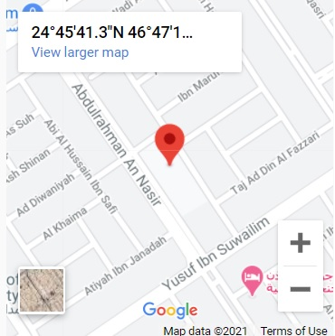
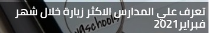
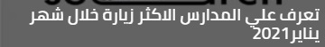

contact Details
Riyadh, the Gulf district
open time : 7:30am to 5:00pm
phone number1 : 0500449356
Email : falah11218@gmail.com
About The School
Our schools: Al-Falah National Schools in Riyadh Our Location: Al-Falah National Schools are located in the city of Riyadh in the northeastern region, where they are located in the Rawda (3) district of the Gulf neighborhood, Abdul Rahman Al-Nasser Street. Foundation and educational stages: Believing from the author of the message, the Honorable General Supervisor of Schools, Mr. Yusuf bin Muhammad Al-Fayez, that the real investment is investing in the minds of the people of the nation and calculating in raising generations that believe in God as Lord and Islam is our religion and Muhammad - may God bless him and grant him peace - a prophet, and they will be fixed pillars and generous arms for the advancement of the nation The establishment of Al-Falah Private Schools, with its two sections, kindergarten and elementary school, was in the year 1405 AH, then the elementary section for boys 1411 AH, then the intermediate section for girls 1413 AH, the intermediate school for boys in 1417 AH, and then the secondary section in 1419 AH, in order to complete what it set for itself of the message.
Price
| Classroom | study fees |
|---|---|
| grade1 | 12000 Saudi riyals |
| grade2 | 12000 Saudi riyals |
schedule
Morning shift: 7:30 am to 5:00 pm
events
none for this year
Location
Related News


